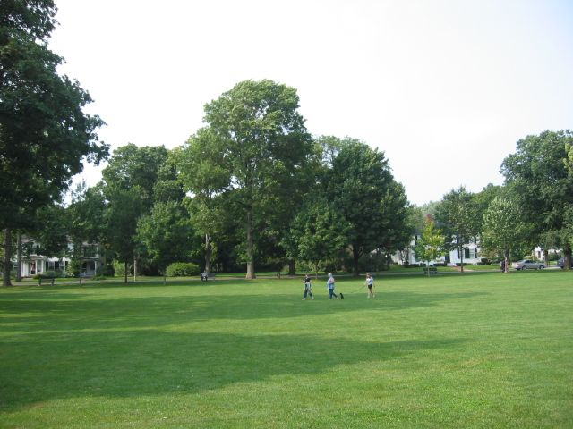

John Tufts was born on November 24, 1754, in Charlestown, the second son of Peter Tufts of Winter Hill and Anne Adams Tufts, and the younger brother of Peter Tufts Jr. On the morning of April 19, 1775, his father rode out on Paul Revere’s alarm, and family accounts say John was charged to stay behind. Ellen Chase, drawing on Jones, tells that he followed on, up beyond Lexington, and that while crossing one of the hills he met Elizabeth Perry, running from her blazing home; he guarded her to her relatives, and they later married. Samuel Abbot Smith, in an 1864 address at West Cambridge, told the same meeting on the authority of their son Oliver.
Booth calls him a scientific farmer and gardener. During the Revolution his father established him on a farm whose house Booth calls the headquarters of General Lee; the place stayed in the family through Oliver, who was born and died there. John served as a minuteman at the Lexington alarm and as a corporal under Capt. Isaac Hall of Medford. In 1806 he was considered non compos; in 1817 he was dismissed from the First Church, Charlestown, to join the Second Church. He died on September 9, 1839, leaving an estate of $16,909.
Summary drawn from the sources cited on this page.
Biography
John Tufts was born on November 24, 1754, in Charlestown, the second son of Peter Tufts of Winter Hill and Anne Adams Tufts
and Anne Adams Tufts , and the younger brother of Peter Tufts Jr.
, and the younger brother of Peter Tufts Jr. . On the morning of April 19, 1775, his father rode out on Paul Revere’s alarm, and family accounts say John was charged to stay behind and take care of things. Ellen Chase, drawing on Jones’s Under Colonial Roofs, tells what followed:
. On the morning of April 19, 1775, his father rode out on Paul Revere’s alarm, and family accounts say John was charged to stay behind and take care of things. Ellen Chase, drawing on Jones’s Under Colonial Roofs, tells what followed:
“Paul Revere's alarm took Peter to the front, his son John, a lad of eighteen, being charged to stay behind and take care of things. The boy, however, could not be pacified at home and followed on, up beyond Lexington. While crossing one of the hills he met Elizabeth Perry, crying and running from her blazing home. He guarded her to her relatives and three years later made her his bride.”
Ellen Chase, The Beginnings of the American Revolution (1910), vol. III, p. 99. Page (Internet Archive)
“John Tufts, the second son of Peter of Winter Hill, was a scientific farmer and gardener. During the Revolution, his father established him on the farm the house of which is now rented by the Somerville Historical society.”
Edward C. Booth, “The Tufts Family in Somerville,” Historic Leaves (Somerville Historical Society), vol. 1 (1902–03), p. 23. Text (Perseus)
Booth calls that house “the headquarters of General Lee” (p. 23); it stayed in the family through his son Oliver Tufts (1801–1883). Elizabeth Perry was, Booth notes, a granddaughter of James Tufts of Medford. They had thirteen children, among them John Jr.; Benjamin, a milk farmer on Washington Street; Oliver, who kept the old Lee house until his death in 1883; Leonard, father of James W. Tufts, the maker of soda-water apparatus; and Asa (Booth, pp. 23–24).
The Sycamore Street Farm

The farm his father gave him during the Revolution, with General Lee’s headquarters house, stayed in the family through his son Oliver Tufts (1801–1883), who was born and died there. Samuel Abbot Smith’s 1864 address at West Cambridge tells of John’s meeting with Elizabeth Perry on April 19, 1775, on Oliver’s authority (Samuel Abbot Smith, West Cambridge on the Nineteenth of April, 1775: An Address Delivered in Behalf of the Ladies’ Soldiers’ Aid Society (Boston, 1864), pp. 50–51. Internet Archive).
In the DAR Records
The DAR lists him as DAR Ancestor no. A116799: corporal, Massachusetts, in Capt. Isaac Hall’s company; born November 24, 1754, at Cambridge; died September 10, 1839, at Somerville.
⚑ Unverified
The DAR gives his birthplace as Cambridge and his death as September 10, 1839; the family record gives Charlestown (now Somerville) and September 9, 1839 (Tufts Kinsmen, Vol. I, p. 105, no. 53-3). Note: Pending further work.
Service Record
Town: Winter Hill, Charlestown (now Somerville), Mass. · Dates: 24 Nov. 1754 – 9 Sep. 1839
Born 24 Nov. 1754 in Charlestown; died 9 Sep. 1839. (Tufts Kinsmen, Vol. I, p. 105, family no. 53-3)
Minuteman at the Lexington Alarm; Corporal in the Massachusetts militia under Capt. Isaac Hall of Medford (the book cites DAR 83:66 and 162:255). (Tufts Kinsmen, Vol. I, p. 105, family no. 53-3)
Considered non compos in 1806; dismissed from First Church, Charlestown, in 1817 to join the Second Church; estate $16,909. (Tufts Kinsmen, Vol. I, p. 105, family no. 53-3)
Family Connection
Family number 53-3 in Tufts Kinsmen, Vol. I. Father: Peter Tufts of Winter Hill . Mother: Anne Adams Tufts
. Mother: Anne Adams Tufts . Brother: Peter Tufts Jr.
. Brother: Peter Tufts Jr. . Son: Oliver Tufts (1801–1883). Nephew: Peter Tufts the surveyor.
. Son: Oliver Tufts (1801–1883). Nephew: Peter Tufts the surveyor.
Relatives with profiles on this site: son Oliver Tufts (1801–1883); mother Anne Adams Tufts ; brother Peter Tufts Jr.
; brother Peter Tufts Jr. ; nephew Peter Tufts the surveyor; uncle Timothy Tufts
; nephew Peter Tufts the surveyor; uncle Timothy Tufts ; grandfather Peter Tufts (1697–1776); sister Ann Tufts Richardson (b. 1757); sister Elizabeth Tufts Swan (b. 1758); brother Joseph Tufts (b. 1760); sister Lydia Tufts Gray (b. 1762); brother Asa Tufts (1764–1828); brother Thomas Tufts of Lexington (1766–1830); sister Lucy Tufts Osgood (b. 1767); sister Rebecca Tufts Adams (1769–c. 1848); sister Sarah Tufts Adams; father Peter Tufts of Winter Hill
; grandfather Peter Tufts (1697–1776); sister Ann Tufts Richardson (b. 1757); sister Elizabeth Tufts Swan (b. 1758); brother Joseph Tufts (b. 1760); sister Lydia Tufts Gray (b. 1762); brother Asa Tufts (1764–1828); brother Thomas Tufts of Lexington (1766–1830); sister Lucy Tufts Osgood (b. 1767); sister Rebecca Tufts Adams (1769–c. 1848); sister Sarah Tufts Adams; father Peter Tufts of Winter Hill .
.
Spouse(s)
- Elizabeth Perry, granddaughter of James Tufts of Medford (Booth, p. 23; Adams, p. 973). Married about 1778 (Chase, vol. III, p. 99). Note: Pending further work on the exact date.
Authoritative IDs / Index Numbers
| Source | ID / status |
|---|---|
| Perseus person index (auth=) | auth=tufts,john. This is a name-level key shared by every John Tufts in Perseus, not a personal ID. Use it with the passages cited on this page. |
| Find a Grave memorial | Checked, not found |
| Brooks, History of Medford (1855) register no. | Checked, no entry confidently matched |
| Tufts Kinsmen, Vol. I family no. | 53-3 |
| Mass. Soldiers and Sailors | Not yet checked for this page |
| DAR ancestor no. | A116799 (DAR Ancestor Database) |
| FamilySearch ID | Note: Pending further work. |
| Geni profile | Note: Pending further work. |
| WikiTree ID | Note: Pending further work. |
| Town / vital records | Medford VRs not yet checked by volume and page |
Only IDs confirmed against dates and family are given as matches. “Not yet checked” means the source has not been searched; “Checked, not found” means it was searched without a match.
⚑ Unverified
Possible match to “Tufts John Corporal” on the Medford 1925 monument. No other source on this site has yet been checked for this man. Birth: Adams (p. 973) gives Nov. 24, 1754; Booth (p. 23) says 1755. Chase’s “a lad of eighteen” does not fit either (he would have been twenty). Marriage date (“three years later,” i.e., about 1778): Note: Pending further work. Number of children: Booth (pp. 23–24) names thirteen; the family record of his son Oliver calls Oliver the twelfth of twelve. Note: Pending further work.
Pictures


.jpg){kind=link}
Links and Resources
Every source, record, map, survey, marker and artifact tied to this person, gathered in one place. Page numbers are given where a book is cited.
Maps, Surveys and Artifacts
- — Old Tufts House, Sycamore Street, Somerville. Early twentieth-century colored postcard: “Old Tufts House, Sycamore St., Somerville, Mass.” The tablet beside the upper window marks the house as the hea
- — Lexington Battle Green. The Battle Green at Lexington, where the first shots of April 19, 1775 were fired (photographed 2007). Image: Dudesleeper. CC BY 2.5. Source: Wikimedia Commons
- Source: Wikimedia Commons — Lexington Battle Green. The Battle Green at Lexington, where the first shots of April 19, 1775 were fired (photographed 2007).Image: Dudesleeper. CC BY 2.5.
Digitized Books and Journals
- Ellen Chase, The Beginnings of the American Revolution (1910), vol. III, p. 99. · Page (Internet Archive)
- Edward C. Booth, “The Tufts Family in Somerville,” Historic Leaves (Somerville Historical Society), vol. 1 (1902–03), p. 23. · Text (Perseus)
- …with Elizabeth Perry on April 19, 1775, on Oliver’s authority (Samuel Abbot Smith, West Cambridge on the Nineteenth of April, 1775: An Address Delivered in Behalf of the Ladies’ Soldiers’ Aid Society (Boston, 1864), pp. 50–51. · Internet Archive
Archives, Letters and Records
- DAR Ancestor no. A116799 — The DAR lists him as